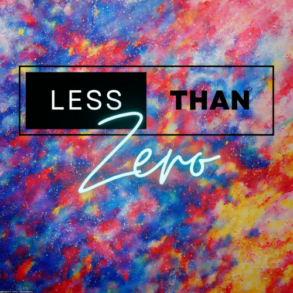

1. Jerskin Fendrix - Beth's Farm
2. Sunday (1994) - Doomsday
3. Cigarettes After Sex - Anna Karenina
4. Julien Baker & TORRES - Sugar in the Tank
5. Ronboy - Disaster
6. Agriculture - Hallelujah
7. Pile - Bouncing in Blue
8. Geese - Cobra
9. Runnner - Spackle
10. The Beths - Mother, Pray for Me
11. Friendship - Free Association
12. Nation of Language - Inept Apollo
13. Black Country, New Road - For the Cold Country
14. Moonchild Sanelly - I Love People
15. Public Service Broadcasting - The Fun Of It (Gus alt-J Remix)
16. Sharon Van Etten & The Attachment Theory - Trouble
17. James Yorkston featuring Nina Persson - A Moment Longer
18. Bonnie “Prince” Billy - Boise, Idaho
19. Adrianne Lenker - ruined
20. The Strokes - Juicebox
21. Peter Sarstedt - Where Do You Go (My Lovely)
22. David Bowie - Lazarus
23. Destroyer - Hydroplaning Off the Edge of the World
24. They Are Gutting a Body of Water - the chase
25. Matt Berninger - Bonnet of Pins
26. Divorce - O Calamity
27. Katherine Priddy - Matches
28. Racing Mount Pleasant - Your New Place
29. Anna von Hausswolff - Facing Atlas